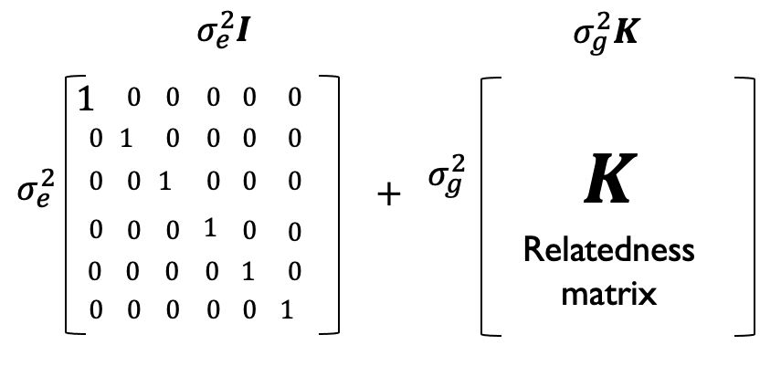

7.5 Linear mixed models#
In previous sections, we introduced the concept of association testing for GWAS using linear or logistic models. We also saw how factors, most commonly ancestry, can confound association tests, and added population PCs as covariates to our models to control for this confounding and reduce in inflation in the p-values.
Here, we’ll introduce an extension of the linear models considered previously, known as linear mixed models that will help us further control for possible confounding from relatedness and also as a result will help improve power to detect associations. The concept of statistical power will be described in more detail in a subsequent section.
7.5.2 Overview of LMMs#
Recall our original linear model we used for quantitative traits:
where:
\(Y=\{y_1, ..., y_n\}\) is a vector of phenotypes for each of our \(n\) samples. (This is often scaled to have mean 0 and variance 1).
\(X_j=\{x_{j1}, ..., x_{jn}\}\) is a vector of genotypes for SNP \(j\) (0s, 1s, and 2s).
\(\beta_j\) is the effect size for SNP \(j\) (this is just a scalar value).
\(C\) is an \(n\times C\) matrix of covariates (e.g. sex, age, top population PCs) and \(\gamma\) is a \(C \times 1\) vector of covariate coefficients.
\(\epsilon=\{\epsilon_{1}..., \epsilon_{n}\}\) is a vector of noise terms for each sample.
We generally make the assumption that the noise term for each sample is independent and normally distributed, with \(\epsilon_i \sim N(0, \sigma^2_e I)\). Here \(\sigma^2_e\) is an unknown scalar value that quantifies how much variance is due to the noise term (not explained by SNP \(j\)), and \(I\) is the \(n \times n\) identity matrix. In other words, the variance of each individuals noise term is \(\sigma^2_e\) and the covariance between noise terms for different samples is 0.
In the model above, we refer to the SNP (\(\beta_j X_j\)) and covariates (\(C\gamma\)) terms as fixed effects. This means we assume they have some true underlying, constant, value.
Now we will introduce an additional term to our model:
where:
\(u \sim N(0, \sigma^2_g K)\)
\(K\) is an \(n \times n\) genetic relatedness matrix (GRM). The GRM can be thought of as giving the correlation of genotypes across all SNPs for each pair of samples, adjusted for minor allele frequencies. We will give more details on \(K\) below.
\(\sigma^2_g\) is a scalar value quantifying how much phenotypic variance is driven by genetic relatedness.
Some important notes about \(u\):
The \(u\) term added above will be treated as a random effect that will capture all genotyped SNPs (similar to as if we added \(m\) additional variables to our model for each of the \(m\) SNPs in our dataset). As opposed to fixed effects, we assume random effects are just that (random) and are drawn from some distribution. We are not actually going to look at the effect of each of the genome-wide SNPs in this model, but rather will treat them as nuisance parameters that are captured by this \(u\) term.
Another way to think about \(u\) is that it adds some structure to our error terms. In the fixed-effects only models, errors were uncorrelated across samples. Now, we have \(u+\epsilon \sim N(0, \sigma^2_eI+\sigma^2_gK)\). Now, the covariance of this term for a pair of samples is no longer 0, but is a function of their relatedness. More closely related samples will tend to have more correlated \(\epsilon+u\) terms, whereas completely unrelated samples will not have correlated terms.
 Phenotypic covariance is modeled as being due to a combination of uncorrelated noise (\(\sigma^2_eI\)) and genetic relatedness (\(\sigma^2_g K\)).
We do not go over how to fit an LMM here, but point readers to tools such as GCTA or BOLT-LMM. Most tools implementing LMMs will use a version of restricted maximum likelihood (REML). They take as input the genotypes and phenotypes, and output effect sizes and p-values for each SNP similar to the linear model. These tools can also be used to estimate the \(\sigma^2_e\) and \(\sigma^2_g\) terms, which we will talk about more when we discuss heritability in the next chapter.
7.5.4 Putting it all together - PCs and LMMs#
In a typical modern GWAS, the GRM comes into play in two different ways:
The eigenvectors of the GRM turn out to be the same as projection of samples along the top PCs, as we did in global ancestry analysis. These are included as fixed effects covariates (e.g. \(C\gamma\) in the model above). These PCs control for global population structure.
The GRM is also used to define the covariance of the random effects term \(u \sim N(0, \sigma^2_g K)\). This allows us to tell the model that phenotype values for more closely related individuals should be more correlated.
7.5.5 Advantages of LMMs#
LMMs provide multiple advantages over fixed-effects only models for GWAS:
By controlling for cryptic relatedness, we can be less concerned about having related samples in our cohort. (It is still considered good practice to remove close relatives though).
They also turn out to improve power. We have not yet formally defined power, but intuitively this means the p-values tend to be stronger than under the standard linear models. This is likely because by controlling for relatedness at other areas of the genome when testing each individual SNP, we are reducing noise, making it easier to detect an effect for that SNP.
7.5.6 Other applications of LMMs#
In future chapters, we’ll use LMMs for a number of applications including:
Estimating heritability
Partitioning trait variance explained between different genomic annotations